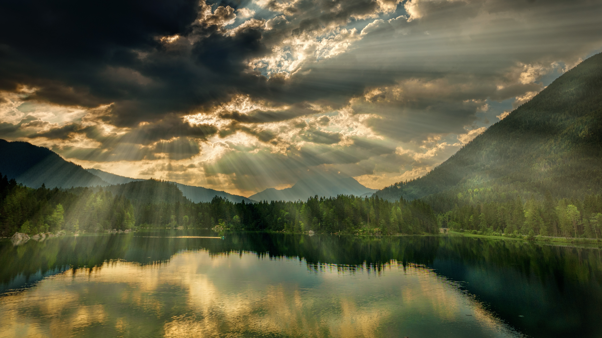
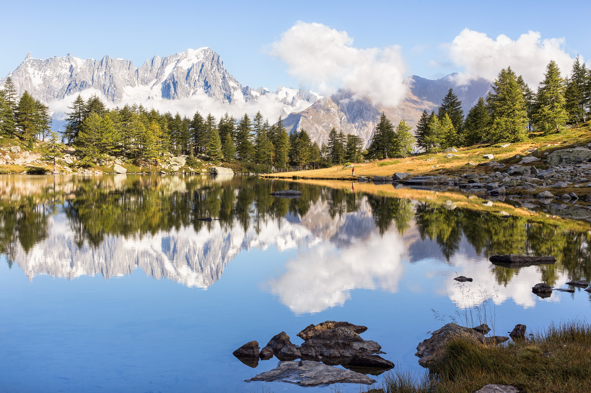

Почему стоит путешествовать
Путешествия помогают увидеть новые города, познакомиться с культурой разных стран и отдохнуть от привычной обстановки.
Каждая поездка оставляет впечатления: архитектура, природа, местная кухня и общение с людьми делают отдых насыщенным.
Ниже представлены несколько мест, которые стоит посетить хотя бы один раз.



